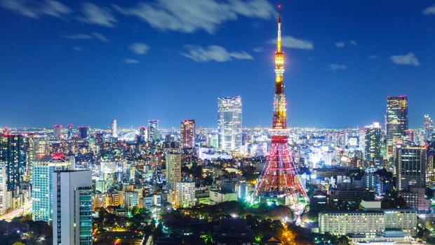
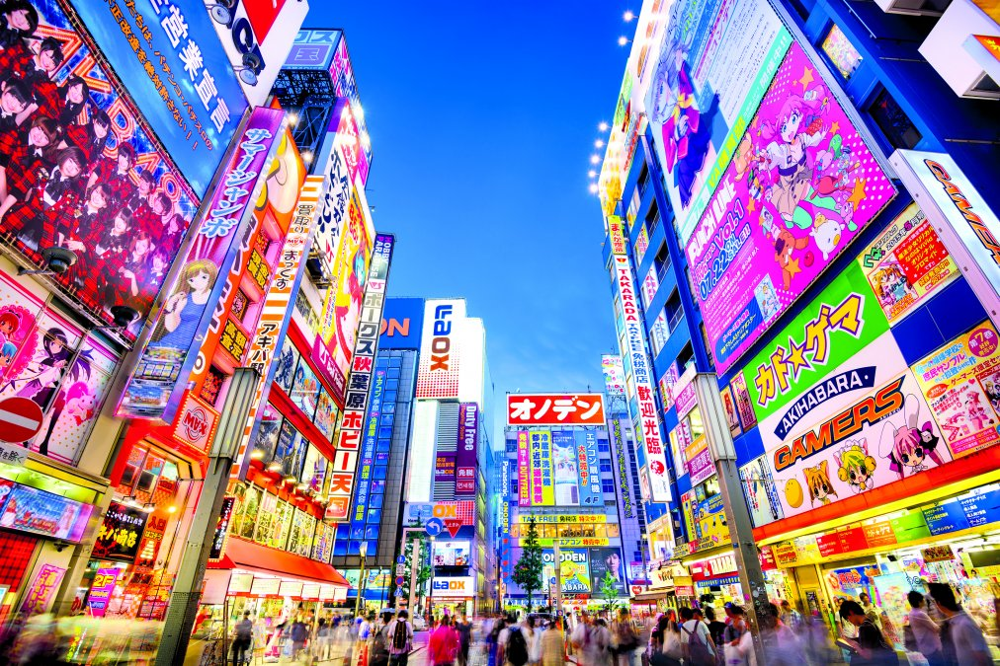

Tokio, la ajetreada capital de Japón, mezcla lo ultramoderno y lo tradicional, desde los rascacielos iluminados con neones hasta los templos históricos. El opulento santuario Shinto Meiji es conocido por su puerta altísima y los bosques circundantes. El Palacio Imperial se ubica en medio de grandes jardines públicos. Los distintos museos de la ciudad ofrecen exhibiciones que van desde el arte clásico (en el Museo Nacional de Tokio) hasta un teatro kabuki reconstruido (en el Museo Edo-Tokyo).
Con una población que supera los 37 millones de habitantes, se subdivide en 23 barrios. El centro de Tokio, con sus 23 barrios, ocupa un tercio de la metrópoli, con una población cercana a los 13,23 millones de habitantes; esta área es lo que se conoce internacionalmente como la ciudad de Tokio. En su área metropolitana viven más de 37 millones de habitantes, lo que la convierte en la mayor aglomeración urbana del mundo.
La mayor parte de la población de Tokio es budista. Centenares de templos budistas pueblan la provincia, aunque muchos de los habitantes de Tokio van a estos templos solo en ceremonias muy especiales como bodas y funerales, y prefieren practicar sus actos religiosos en casa. Muchas de las residencias están amuebladas al estilo japonés, aunque otras siguen un patrón más occidental. La mayor parte de la gente usa vestimentas occidentales en su vida cotidiana. Algunas personas más ancianas —especialmente mujeres— usan el kimono, una ropa tradicional japonesa. Los vestidos tradicionales japoneses solo se usan, generalmente, en días o eventos especiales.
El Festival Internacional de Cine de Tokio (conocido como TIFF: Tokyo International Film Festival), se lleva a cabo cada octubre o noviembre desde 1985. En él se proyectan más de trescientas películas, siendo el mayor entre los festivales asiáticos de cine, y, junto con el Festival de Shanghai, en China, es uno de los dos festivales de Asia acreditados por la Federación Internacional de Productores de Cine (FIAPF).
Dos formas de drama japonesas, el nō y el kabuki, son las formas favoritas de entretenimiento de la población de la provincia. El Teatro Nacional nō, ubicado cerca de la estación de trenes Sendagaya tiene funciones todos los fines de semana. Existen múltiples escuelas de nō, entre ellas la escuela Kanze nō-gakudo. El teatro Kabuki-za tiene funciones diarias de kabuki. Esta forma artística también tiene representaciones en enero, marzo, y de octubre a diciembre en el Teatro Nacional.
Los matsuri son festivales populares japoneses, generalmente de origen sintoísta y auspiciados por algún templo o santuario; aunque a veces pueden tener un origen secular o hasta cristiano. A lo largo de todo el año se efectúan matsuri en la prefectura de Tokio, y algunos son especialmente atractivos para la población del resto del país.
El museo más importante de Japón es el Museo Nacional de Tokio, el cual se encuentra en la parte noreste del parque Ueno. Este museo es administrado por el gobierno del país, a través de la Agencia de Asuntos Culturales. El conjunto de edificios que conforman el museo, contiene la mayor colección de arte japonés en el mundo (90 mil piezas). El alcance museográfico abarca la historia de Japón, desde tiempos prehistóricos hasta la era moderna.
La cocina en Tokio es aclamada internacionalmente. En noviembre de 2007, Michelin lanzó su primera guía para cenar en Tokio, otorgando 191 estrellas en total, o aproximadamente el doble que el competidor más cercano de Tokio, París. A partir de 2017, se han otorgado 227 restaurantes en Tokio (92 en París). Doce establecimientos recibieron el máximo de tres estrellas (París tiene 10), 54 recibieron dos estrellas y 161 ganaron una estrella.
Al igual que en el resto del país, el sumo tiene un lugar destacado entre los deportes en Tokio. En el Estadio Nacional de Sumo, localizado en Ryogoku, tienen lugar los torneos de enero, mayo y septiembre, que atraen a miles de espectadores. El emperador de Japón asiste personalmente al torneo de mayo. Los entrenamientos de sumo se llevan a cabo en los establos, o beya, y muchos permiten la entrada de espectadores.
Al ser uno de los principales focos de historia y cultura en Japón, la prefectura de Tokio recibe más de la mitad de los turistas internacionales que llegan al país, con el 58,3 %. Anualmente, casi 2,6 millones de personas visitan Tokio, representando un ingreso anual de dos mil millones de dólares. Este flujo de visitantes la convierte en la sexta ciudad del mundo con más visitantes internacionales, detrás de Londres, París, Nueva York, Hong Kong y Singapur. Al ser la principal entrada al país, Tokio es una región de desarrollo crítica para el fomento del turismo internacional. Entre los visitantes que llegan a la ciudad, el 63,8 % proviene de países asiáticos, el 18,5 % de América del Norte, el 12,7 % de Europa, y el restante 5 % proviene de otros países.